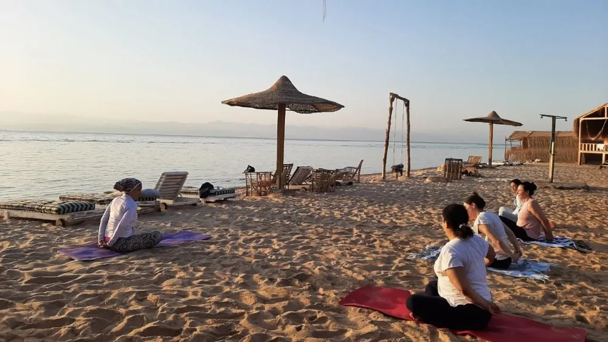

التخفف من ثقل الماضي
أن تلاحظ ما زلت تحمله، وتبدأ بتخفيف قبضتك عليه، من غير أن يُطلب منك محو الذاكرة أو إنكار ما حدث.
GHOFRAN
تجربة تحوّلية VIP في أحضان النيل
رحلة للتصالح مع الماضي والعودة إلى السلام الداخلي
التقديم لا يعني تأكيد الحجز

عن الرحلة
غُفْرَان تجربة تحوّلية في أحضان النيل، من أسوان إلى الأقصر، مع د. رنا مسعد. ليست دعوة لمحو ما حدث، بل رحلة للتصالح مع الماضي والعودة إلى سلام داخلي أقرب.
على مدى 4 ليالٍ و5 أيام، من 20 إلى 24 يناير 2027، تبحر مجموعة صغيرة — نحو 20 مشاركًا — على مركب خاص بالمجموعة. يجتمع فيها السفر والعمل الداخلي: تخفف من ثقل الماضي، وتحرر من مشاعر عالقة، وتسامح وغفران للآخرين وللنفس، ثم اتجاه نحو السلام والاتصال بالله.
ما يُعاش هنا يختلف من شخص إلى آخر. خمسة أيام لا تضمن إزالة كل آثار الماضي، ولا تَعِد بنتيجة نفسية محددة. وإذا كانت هناك حاجة إلى علاج نفسي متخصص، فهذه الرحلة لا تحل محله.
أحيانًا لا يظهر الماضي كقصة كاملة، بل كثقل هادئ يبقى في اليوم: شعور يعود، أو حدّ يصعب الإمساك به، أو سلام تأجّل. غُفْرَان تبدأ من هذا الانتباه. مشاركة ما تحمله اختيارية، وحدودك محترمة.
هل ما زال شيء من الماضي يعيش بداخلك، حتى حين يبدو أن الحياة مضت؟
هل بقيت مشاعر عالقة لم تجد بعد طريقًا هادئًا للخروج؟
هل يصعب الغفران — للآخرين أو لنفسك — من غير أن تشعر أنك تتنازل عن حدّك؟
هل تبحث عن سلام أقرب، واتصال أهدأ بالله، تعود به إلى حياتك؟
هذه أسئلة للتعرّف على ما قد يلامسك، وليست شهادات مشاركين.
لماذا الغفران؟
الغفران في غُفْرَان لا يتطلب تبرير الأذى، ولا العودة إلى علاقة مؤذية، ولا التخلي عن حدودك.
يمكنك أن تخفف ما تحمله في قلبك وأن يبقى حدّك واضحًا. الغفران هنا ليس حكمًا بأن ما حدث كان مقبولًا، وليس طلبًا بأن تعود إلى مكان أذاك. هو اتجاه داخلي نحو أن يخفّ الألم الذي ما زلت تحمله من الماضي.
ويشمل ذلك غفران النفس: أن تنظر إلى ما فعلته، أو إلى ما لم تستطعه، بعين أرحم، من دون إنكار ما جرى، ومن دون أن يتحول الندم إلى عقوبة لا تنتهي. غفران الآخرين وغفران النفس يقفان معًا، وكلاهما يحترم أن لكل إنسان إيقاعه وحدّه.
هذا الاتجاه لا يُغلق كل شيء خلال خمسة أيام. هو بداية يمكن أن تُعاش على النيل، ثم تُرافق بهدوء حين تعود إلى حياتك.
التجربة
أن تلاحظ ما زلت تحمله، وتبدأ بتخفيف قبضتك عليه، من غير أن يُطلب منك محو الذاكرة أو إنكار ما حدث.
مساحة للمشاعر التي بقيت بلا مخرج: أن تُرى وتُعاش بالسرعة التي تناسبك، ومن غير إجبار على مشاركة لا تريدها.
غفران لا يشترط تبرير الأذى، ولا العودة إلى علاقة مؤذية، ولا التخلي عن الحدود. ويشمل النفس كما يشمل الآخرين.
اتجاه نحو سلام أهدأ واتصال أقرب بالله، تعود به إلى حياتك برؤية أوسع. هذا أفق للرحلة، لا نتيجة مضمونة لكل شخص.
خمسة أيام لا تضمن إزالة كل آثار الماضي، ولا توجد نتيجة نفسية مؤكدة في نهاية الرحلة. ما يتغير يختلف من تجربة إلى أخرى.
الممارسات والجلسات
البرنامج يسكن داخل أيام النيل: جلسات، وتدريب، وتأمل، وفن، ودوائر مشاركة اختيارية، ووقت للحضور. يمكنك أن تشارك بما تختاره، وأن تصمت حين تحتاج إلى ذلك.
مساحة لترى ما يتحرك بداخلك الآن، بهدوء ووضوح، من غير استعجال لاستنتاج.
تمارين لمرافقة ما بقي عالقًا، بالقدر الذي يناسبك، ومن غير دفع نحو انكشاف لا تريده.
تأمل يفتح اتجاه الغفران، للنفس وللآخرين، مع الإبقاء على حدودك كما هي.
تعبير لا يحتاج موهبة سابقة. هو طريقة أخرى ليخرج ما يصعب قوله بالكلام فقط.
مشاركة اختيارية. يمكنك أن تحضر وتصغي من غير أن تروي قصتك، ولن يُطلب منك تجاوز حدّك.
وقت على الطريق بين أسوان والأقصر للراحة والحضور، لا لملء كل ساعة. السباحة، إن وُجدت، اختيارية وتعتمد على الظروف المناسبة.
مركب خاص بالمجموعة، من أسوان إلى الأقصر. قاعة زجاجية تطل على النيل من كل جانب، وإقامة تجمع بين الراحة والتميز.
تجربة النيل الخاصة
نسافر معًا على مركب لنا وحدنا. المجموعة صغيرة، نحو 20 مشاركًا، والتجربة مصممة لتبقى حميمة: عمل داخلي، وحضور، ووقت للنيل. الإقامة فردية أو مشتركة حسب التوفر، وتُوضَّح تفاصيلها أثناء التواصل.
المركب خاص بمجموعة غُفْرَان، لا رحلة جماعية عامة.
مكان للجلسات والحضور، مفتوح على النيل.
فردية أو مشتركة حسب التوفر. التفاصيل الكاملة أثناء التواصل.
نحو 20 مشاركًا، حتى تبقى المساحة قريبة وهادئة.
البرنامج
الطريق من أسوان إلى الأقصر. كل يوم له اتجاه داخلي، والزيارات تسير مع برنامج الإبحار. لا يُعرض هنا جدول ساعات نهائي.
نبدأ من أسوان. هذا اليوم لبداية الرحلة وتحديد النية: أين تقف الآن، وما الذي تريد أن تخففه معك وأنت تتحرك مع النيل.
في كوم أمبو نبدأ بوضع الحمل: أن نسمي ما يثقل، وأن نتركه ينزل قليلًا، من غير أن نمحو الماضي.
يوم إدفو للتسامح والغفران، للآخرين وللنفس. الغفران هنا لا يبرر الأذى، ولا يطلب العودة إلى علاقة مؤذية، ولا يطلب التخلي عن الحدود.
بين إسنا والأقصر تتسع المساحة للخفة: حضور أهدأ، ووقت أوسع للاستمتاع، بعد أن بدأ الحمل يخف.
نختم في الأقصر. اليوم للعودة إلى الحياة برؤية مختلفة: ما الذي يمكن أن تحمله معك، وما الذي تتركه، من غير وعد بأن كل شيء قد أُغلق.
يخضع ترتيب الزيارات والتوقيتات للتنسيق النهائي لبرنامج الإبحار والزيارات.
السباحة اختيارية، وتعتمد على توافر الظروف المناسبة.

مع د. رنا مسعد
د. رنا مسعد · مدربة وعي ذاتي وروحي · خبرة خمس سنوات
أنا د. رنا مسعد، مدربة وعي ذاتي وروحي. منذ خمس سنوات أرافق الناس في رحلات وعي أقرب إلى الذات وإلى الله. في غُفْرَان سأكون معك بنفسي، خطوة بخطوة، داخل تجربة تجمع السفر والعمل الداخلي.
لا أعدك بأن خمسة أيام ستزيل أثر الماضي، ولا أقدّم هذه الرحلة بديلًا عن العلاج النفسي المتخصص حين تكون إليه حاجة. أرافقك في مساحة واضحة الحدود: المشاركة اختيارية، والغفران لا يعني التنازل عن حدّك.
هذه إمكانات، لا وعود. ما يخرج به كل شخص يعتمد على تجربته، ولا توجد نتيجة نفسية مضمونة خلال خمسة أيام.
إذا كنت تحتاج مرافقة علاجية متخصصة، فهذه الرحلة لا تحل محلها.
المجموعة نحو 20 مشاركًا، والمركب لنا وحدنا، حتى تبقى المساحة حميمة وهادئة. مشاركة القصص الشخصية اختيارية، والحدود محترمة. لا يُطلب منك أن تروي ما لا تريد روايته، ويمكنك أن تحضر وتصغي فقط.
غُفْرَان تجمع بين السفر والعمل الداخلي. قد لا تناسب من يبحث فقط عن سياحة تقليدية. تناسب من يريد أن يتحرك من أسوان إلى الأقصر، وفي الوقت نفسه يلتفت إلى ما يحمله من الماضي، بحرية ألا يشارك إلا بما يختاره.
وهي ليست بديلًا عن العلاج النفسي المتخصص عند الحاجة، ولا تعد بنتيجة خلال خمسة أيام.
ما يشمله البرنامج
تُوضَّح تفاصيل المشاركة والإقامة كاملة أثناء التواصل. لا يُعرض سعر في هذه الصفحة.
الأسئلة الشائعة
لا. المقاعد محدودة، والتقديم لا يعني تأكيد الحجز.
المسار المقصود ثلاث خطوات: إكمال نموذج الاهتمام، ثم مراجعة الفريق للمعلومات والتواصل لإجراء مكالمة قصيرة، ثم شرح الملاءمة والإقامة وتفاصيل المشاركة وخطوات تأكيد الحجز. نموذج التقديم الإلكتروني غير متصل حاليًا على هذه الصفحة.
لا. خمسة أيام لا تضمن إزالة كل آثار الماضي، ولا توجد نتيجة نفسية مضمونة.
لا. هذه التجربة لا تحل محل العلاج النفسي المتخصص عند الحاجة.
لا. مشاركة القصص الشخصية اختيارية، والحدود محترمة. يمكنك أن تحضر وتصغي من غير أن تروي ما لا تريد روايته.
لا. الغفران لا يتطلب تبرير الأذى، ولا العودة إلى علاقة مؤذية، ولا التخلي عن الحدود.
يخضع ترتيب الزيارات والتوقيتات للتنسيق النهائي لبرنامج الإبحار والزيارات.
لا. السباحة اختيارية، وتعتمد على توافر الظروف المناسبة.
المجموعة المستهدفة نحو 20 مشاركًا. الإقامة فردية أو مشتركة حسب التوفر، وتُوضَّح تفاصيل المشاركة والإقامة أثناء التواصل.
تشمل أربع ليالٍ على المركب، والوجبات اليومية، والبرنامج التدريبي والجلسات، والزيارات المجدولة وتذاكر الدخول، والانتقالات المرتبطة بخط السير. لا تشمل الطيران من القاهرة وإليها، ولا المشروبات الخاصة.
دليل يصلك بعد الرحلة ليرافقك في الثلاثين يومًا التالية. هو مرافقة بعد العودة، وليس ضمانًا لنتيجة.
قد لا تناسب من يبحث فقط عن سياحة تقليدية، لأنها تجمع بين السفر والعمل الداخلي.
GHOFRAN
ماذا لو لم تكن بحاجة إلى محو الماضي، بل إلى التحرر من الألم الذي ما زلت تحمله منه؟
غُفْرَان تجربة تحوّلية VIP في أحضان النيل، للتصالح مع الماضي والعودة إلى السلام الداخلي. مع د. رنا مسعد، من أسوان إلى الأقصر، 20–24 يناير 2027، 4 ليالٍ و5 أيام، على مركب خاص بمجموعة صغيرة.
المقاعد محدودة، والتقديم لا يعني تأكيد الحجز.
التقديم عبر هذه الصفحة غير متاح حاليًا، ولا تُجمع هنا أي بيانات شخصية.
للاستفسار عن تفاصيل التقديم، تواصل معنا عبر واتساب.
استفسار عبر واتسابالاستفسار ليس تقديمًا للطلب، ولا يعني تأكيد الحجز. واتساب: +20 103 917 2696